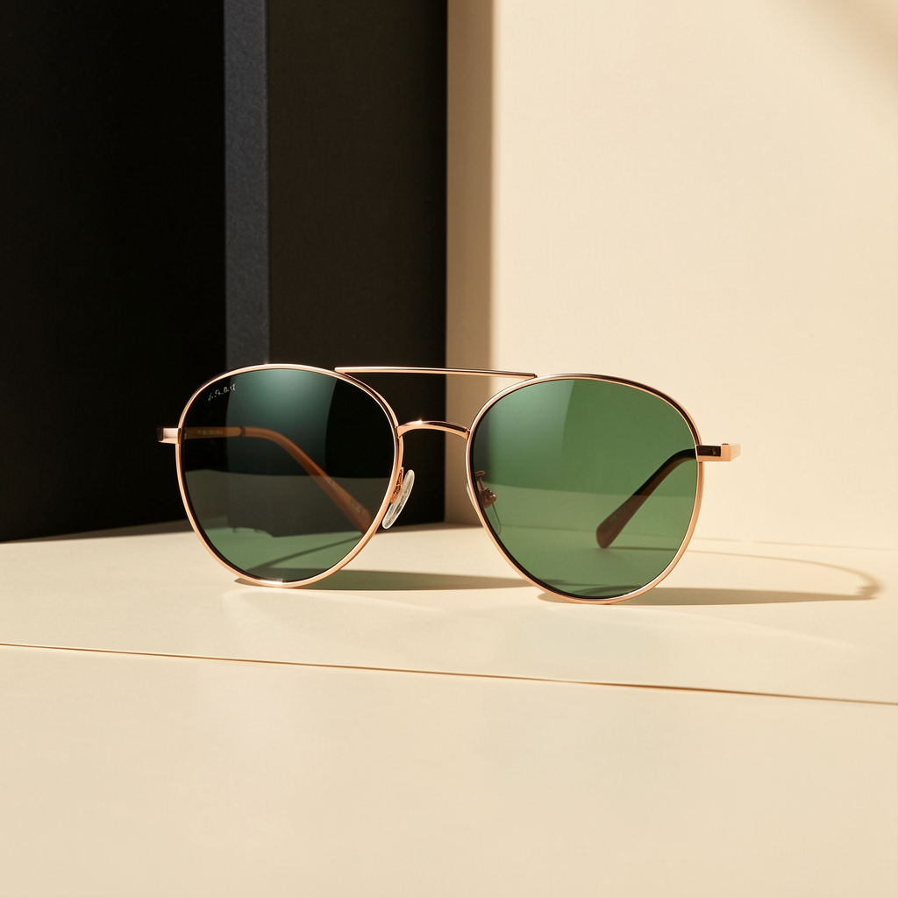

Post 01assets/legacy_optical_noir_post_01.png
ForgeGraph client handoff
Legacy Optical Noir — entrega para revisión
Paquete armado desde el prompt operativo, con estrategia, contenido, assets, medición, QA y evidencia de linaje listos para aprobación. No se afirma publicación en vivo: el lanzamiento queda condicionado a aprobación y conectores reales.
Approval checkpoint
Decisión solicitada
- Dirección visual Optical Noir
- Uso de los assets incluidos como borradores de campaña
- Tono Spanish-first, concreto y de baja exageración
- Launch posterior sólo con aprobación y recibos de canal
Artifact Index
ForgeGraph archived run
Engagement, whiteboard, asset checksums, source deliverables, and media provenance are archived in manifest.json. The visible handoff keeps internal IDs out of client copy.
No Markdown files included.
Assets
Posts incluidos

Post 02assets/legacy_optical_noir_post_02.png

Post 03assets/legacy_optical_noir_post_03.png

Post 04assets/legacy_optical_noir_post_04.png

Post 05assets/legacy_optical_noir_post_05.png

Post 06assets/legacy_optical_noir_post_06.png
Codex Strategy Brief
Legacy Optical Noir Strategy Brief
Legacy Optical Noir Weekend Social Launch
Strategy Research Brief
Stage: strategy_research Client: Legacy Run Owner: ForgeGraph / Atlas agency pipeline Launch Window: Weekend social launch Primary Output: Client ZIP containing HTML, PDF, PNG, and manifest files only
Strategic Objective
Launch Legacy Optical Noir as a sharp, premium weekend social campaign centered on dark, cinematic sunglasses imagery. The run must feel polished, fast-moving, and ready for client use without exposing production artifacts or internal markdown files.
ForgeGraph owns the full run end-to-end: strategy, asset direction, media generation, channel packaging, CRM handoff, analytics setup, QA, client approval, delivery, and evidence capture.
Core Positioning
Legacy Optical Noir should present sunglasses as a weekend style signal: confident, refined, minimal, and visually memorable.
The campaign should avoid loud retail language. The tone should be concise, premium, and visual-first.
Strategic cues:
- Noir-inspired contrast
- Premium weekend styling
- Sunglasses as the hero product
- Clean, modern layouts
- Minimal copy
- No people, no logos, no embedded text in generated assets
Target Audience
Primary audience:
- Style-conscious adults preparing for weekend outings
- Buyers drawn to premium accessories, nightlife, travel, and fashion-forward presentation
- Social-first consumers who respond to strong visual mood rather than detailed product explanation
Audience mindset:
- Wants to look composed and intentional
- Responds to sleek product imagery
- Prefers clarity over hype
- Needs fast recognition of the product category
Department Pipeline
- Strategy
- Define positioning, offer framing, content purpose, channel roles, and success criteria before any assets are produced.
- Brand
- Translate the strategy into noir-inspired visual direction, campaign tone, and layout rules.
- Channel
- Prepare weekend-ready social formats and posting guidance for launch use.
- CRM
- Prepare brief, concrete WhatsApp delivery language for Mike only.
- Analytics
- Define evidence requirements, manifest structure, asset lineage, and performance tracking placeholders.
- QA
- Verify every output against format, content, visual, and delivery constraints.
- Client Approval
- Package approved files into the final ZIP and preserve receipt/evidence.
Asset Strategy
Fresh media assets must be produced through a Codex-backed media worker.
Asset requirements:
- Sunglasses must be the clear subject
- No text inside images
- No logos inside images
- No people or body parts
- No brand marks
- No accidental signage, labels, or readable background text
- Premium optical/noir mood
- Suitable for social launch layouts and client packaging
Recommended asset set:
- Hero sunglasses image
- Square feed image
- Vertical story image
- Detail/crop image
- Dark lifestyle product scene without people
- Clean product-forward fallback image
Messaging Direction
Campaign copy should stay short and concrete.
Recommended message pillars:
- Weekend-ready style
- Noir-inspired confidence
- Premium sunglasses
- Clean, modern visual identity
- Limited launch moment without exaggerated urgency
Avoid:
- Overly promotional language
- Discount-first framing unless provided by client
- Claims about UV protection, lens technology, or materials unless verified
- Any unsupported product performance claims
Channel Direction
Primary channels:
- Instagram feed
- Instagram stories
- Facebook feed
- WhatsApp client delivery to Mike only
Social outputs should prioritize visual impact and quick comprehension. Copy should be minimal and paired with strong product imagery.
WhatsApp Delivery Rule
WhatsApp delivery must go to Mike only.
Message must be brief and concrete:
> Mike, the Legacy Optical Noir weekend launch package is ready. The ZIP includes the approved HTML, PDF, PNG assets, and manifest only. No markdown files are included. Receipt and evidence have been preserved.
Client ZIP Requirements
The final client ZIP may contain only:
- `.html`
- `.pdf`
- `.png`
- `manifest`
Do not include:
- Markdown files
- Drafts
- Source prompts
- Internal notes
- Working files
- Unapproved assets
- Logs not intended for client delivery
QA Requirements
QA must confirm:
- Strategy completed before asset production
- Assets contain no text, logos, or people
- Sunglasses are visually clear
- HTML/PDF/PNG outputs render correctly
- Manifest matches included files
- ZIP contains approved formats only
- No markdown files are included
- WhatsApp delivery is addressed to Mike only
- Durable receipt/evidence is preserved
Evidence And Receipt
ForgeGraph must retain durable proof of:
- Department pipeline completion
- Asset generation lineage
- QA pass/fail status
- Final ZIP contents
- Client approval status
- WhatsApp delivery target
- Delivery timestamp
- Receipt or confirmation evidence
Success Criteria
The run is successful when Legacy receives a polished weekend launch package with approved visuals, clear social-ready outputs, strict file hygiene, verified QA, and durable delivery evidence. ForgeGraph remains accountable for the full Atlas agency run from strategy through client receipt.
Message House
Legacy Optical Noir Message House
Legacy Optical Noir Message House Source request: Create a client-ready Legacy Optical Noir weekend social launch package. ForgeGraph must own the run end-to-end: department pipeline, strategy before assets, Codex-backed media worker for fresh no-text/no-logo/no-people sunglasses assets, QA, client ZIP with HTML/PDF/PNG/manifest only, WhatsApp delivery to Mike only, and durable receipt/evidence. Do not send Markdown files to clients. Keep WhatsApp brief and concrete. Positioning: lujo usable para CDMX; editorial, sobrio, accesible-premium. Primary CTA: revisar estilos y aprobar piezas antes de publicar. Tone: Spanish-first, concrete, low-hype, confident.
Crm Scripts
Legacy WhatsApp / DM Response Scripts
WhatsApp / DM scripts Disponibilidad: Te confirmo modelo/color y te comparto alternativas si ya se movió. Precio: Son piezas premium; te ayudo a elegir el par que mejor se vea y más uses. Cierre: ¿Quieres que te aparte este modelo o prefieres ver dos opciones más?
Measurement Plan
Legacy Manual Measurement Plan
Track post saves, replies, profile visits, link clicks, DMs, holds, sold/blocked status, and next action every 24h. Hold live claims until connector evidence exists.
Channel Asset Map
Legacy Channel Asset Map
Channel Asset Map
Qa Report
Legacy Launch QA Report
QA Report Media jobs succeeded: 6/6 Client package formats: HTML, PDF, PNG, JSON manifest, ZIP; no Markdown files. Policy: no live publishing claim; approval required before production launch. Decision: ready for review
Prompt fuente
Solicitud operacional
Create a client-ready Legacy Optical Noir weekend social launch package. ForgeGraph must own the run end-to-end: department pipeline, strategy before assets, Codex-backed media worker for fresh no-text/no-logo/no-people sunglasses assets, QA, client ZIP with HTML/PDF/PNG/manifest only, WhatsApp delivery to Mike only, and durable receipt/evidence. Do not send Markdown files to clients. Keep WhatsApp brief and concrete.